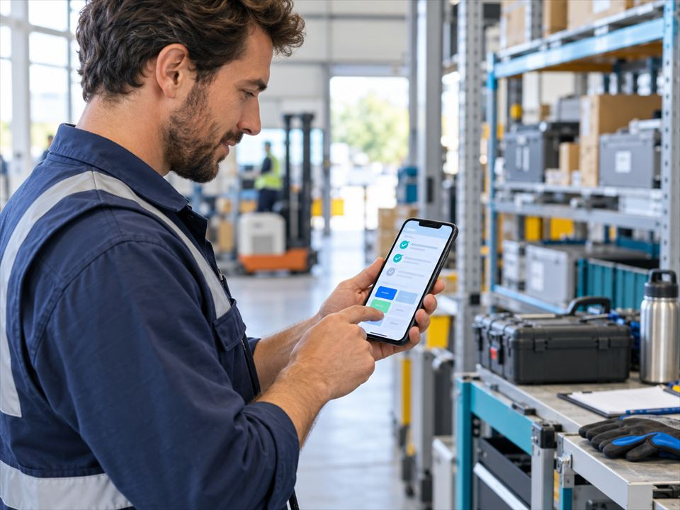

PROCESSI
Ridurre i passaggi manuali
Attività ripetitive tra strumenti diversi possono diventare flussi più chiari, con automazioni e controlli adeguati.
Consulenza & sviluppo digitale
Dall’idea al prodotto: realizziamo web app, software e applicazioni su misura. Quando serve, sviluppiamo anche modelli AI per compiti specifici.
Dal problema alla soluzione
Entriamo nel merito del tuo business, semplifichiamo la complessità e costruiamo lo strumento giusto: niente tecnologia fine a sé stessa.
Prodotti digitali veloci, accessibili e pronti a crescere.
Architetture e strumenti costruiti attorno al tuo modo di lavorare.
Esperienze native e multipiattaforma, dalla strategia al rilascio.
Classificazione, visione artificiale e modelli per compiti specifici.
Dalla complessità a qualcosa di utile
Ogni contesto è diverso. Ecco alcuni scenari illustrativi che possiamo esplorare insieme: non sono case study o risultati attribuiti a clienti.
PROCESSI
Attività ripetitive tra strumenti diversi possono diventare flussi più chiari, con automazioni e controlli adeguati.
OPERATIVITÀ
Una web app o dashboard può aiutare a coordinare attività, dati e persone secondo il processo effettivo del team.

MOBILITÀ
Per attività fuori ufficio si può progettare un’esperienza mobile semplice, con raccolta dati e accesso alle informazioni utili.
VISIONE ARTIFICIALE
Per problemi circoscritti si può valutare un modello che riconosce elementi o assegna categorie, dopo aver verificato dati e fattibilità.
Esempi e immagini sono illustrativi: non rappresentano clienti o progetti reali di KemOps. Fattibilità, priorità e perimetro si definiscono dopo aver compreso il contesto.
Il nostro approccio
Lavoriamo in cicli brevi e trasparenti. Tu vedi, provi e orienti il prodotto mentre prende forma.
Il metodo KemOps ↗Obiettivi, utenti e vincoli prima del codice.
Rendiamo l’idea concreta e verificabile.
Sviluppiamo, testiamo e integriamo.
Misuriamo, impariamo e miglioriamo.
Quando chiamarci
01 Vuoi trasformare un’intuizione in un MVP.
02 Il software attuale limita il tuo lavoro.
03 Vuoi capire se un modello specializzato è adatto al tuo caso.
04 Cerchi un partner tecnico, non un semplice fornitore.
Domande frequenti
Una prima conversazione serve a mettere a fuoco il problema, prima di scegliere strumenti o tecnologie.
Certo. Possiamo partire da ciò che vorresti migliorare e capire insieme quale sia il primo passo sensato: analisi, prototipo o una prima versione del prodotto.
Dipendono da obiettivi, integrazioni, vincoli e perimetro. Dopo aver chiarito questi aspetti si può preparare una proposta con attività, tempi e condizioni.
Spesso sì. Prima si analizzano gli strumenti e le integrazioni disponibili; poi si valuta se conviene estenderli, collegarli o sostituire alcune parti.
Da un problema misurabile, come classificare dati o riconoscere elementi nelle immagini. Verifichiamo qualità dei dati, fattibilità e criteri per valutare il modello.
Supporto, manutenzione e passaggio di consegne vengono definiti nel perimetro del progetto, in base alle esigenze del prodotto e del team.
Hai un progetto in mente?